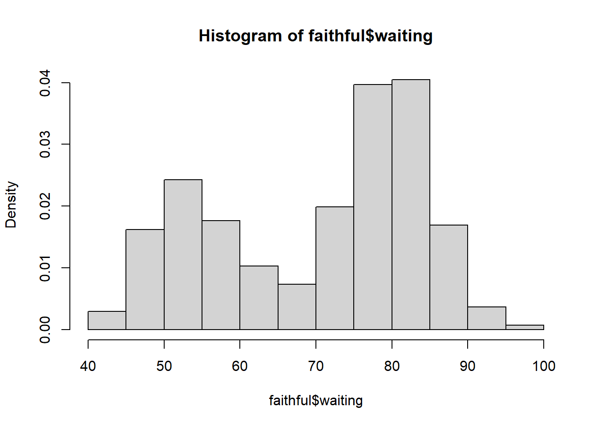
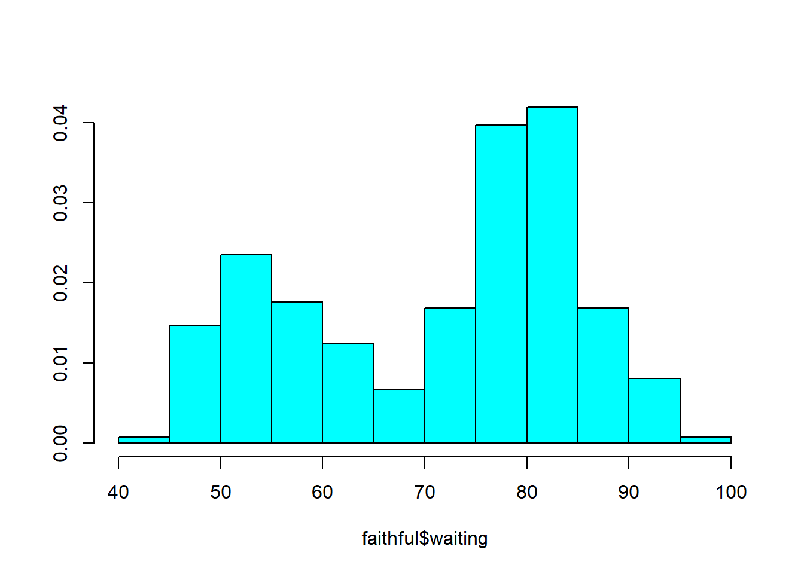
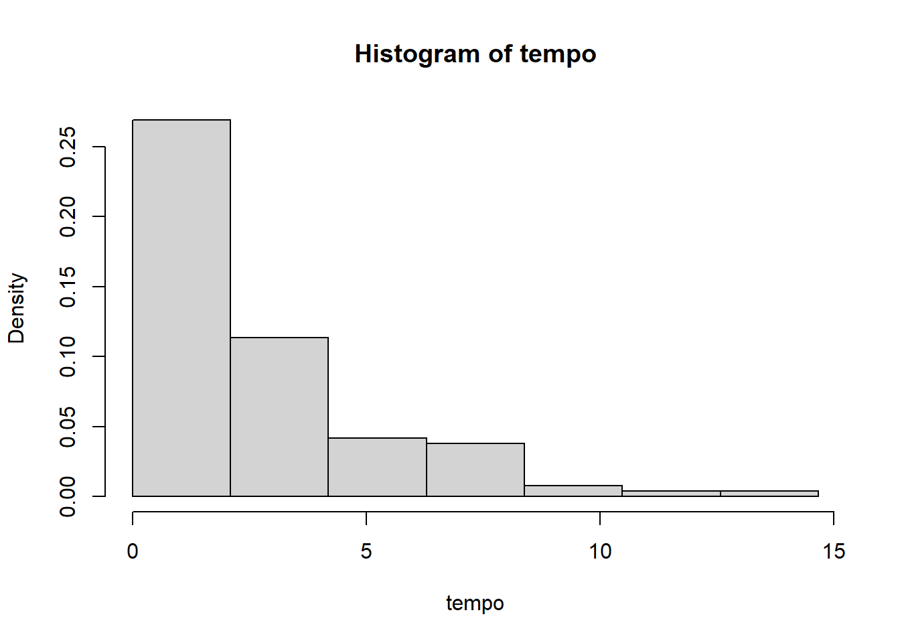
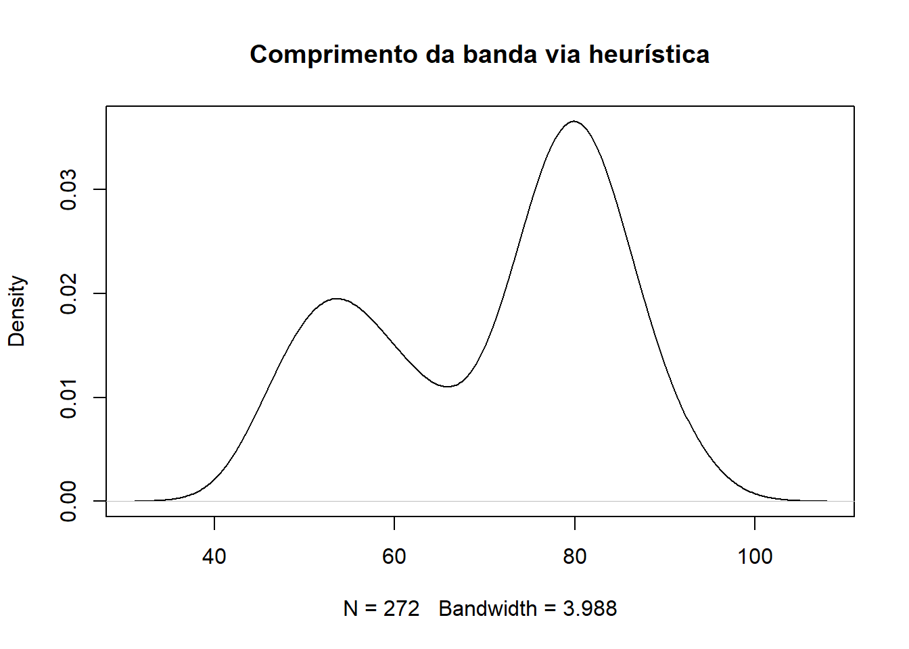
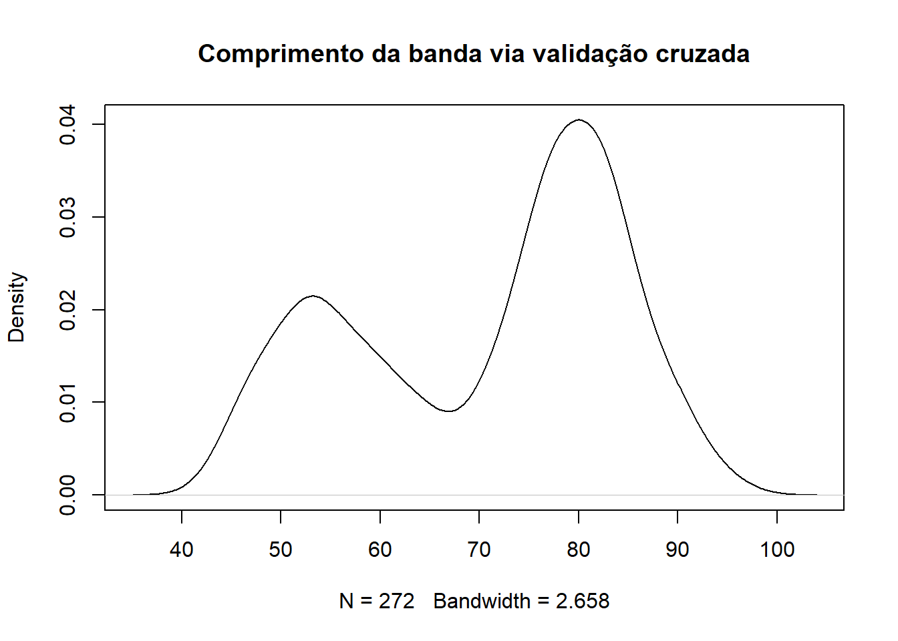
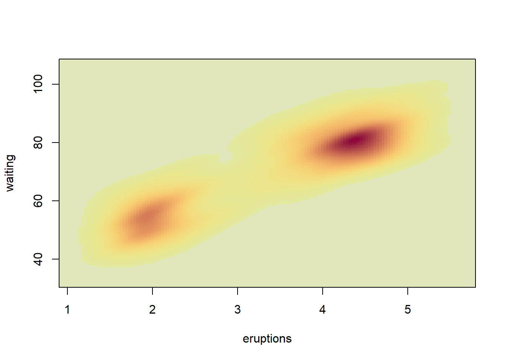

hist(faithful$waiting, freq = FALSE)
Seja \(X_1,\ldots,X_n\) uma amostra aleatória de um modelo contínuo. Vamos denotar \(\hat{f}_n(x)\) como o estimador para a densidade \(f(x)\). É importante ressaltar que o \(x\) em \(\hat{f}_n(x)\) é um argumento da função, ou seja, para qualquer valor de \(x'\) no suporte de \(f(x)\), a quantidade \(\hat{f}_n(x')\) é um estimador para \(f(x')\).
Em geral, utilizamos a notação \(\hat{f}_n(x)\) tanto para o estimador quanto para a estimativa, ficando as diferenças óbvias dentro do contexto.
Assim como podemos definir a função de perda quadrática em estimação pontual, podemos definir sua análoga em funções, denominada função de perda quadrática intergrada, definida por
\[\begin{align}L_{\hat{f}_n}(f)&=\int \left(f(x)-\hat{f}_n(x)\right)^2dx\\&=\int_0^1f(x)^2dx-2\int f(x)\hat{f}_n(x)dx+\int\hat{f}_n(x)^2dx\end{align}\]
Em princípio, buscamos por \(\hat{f}_n\) que minimize o erro quadrático médio integrado (EQMI), dado por \(E[L_{\hat{f}_n}(f)]\). Contudo, o cálculo do EQMI é impossível, pois \(f(x)\) é desconhecida. Para contornar esse problema, note que o termo de \(L_{\hat{f}_n}\) que depende de \(\hat{f}_n(x)\) é
\[\begin{align}J_{\hat{f}_n}&=-2\int \hat{f}_n(x)f(x)dx+\int\hat{f}_n(x)^2dx\\&=-2\int \hat{f}_n(x)f(x)dx+\int\hat{f}_n(x)^2dx\end{align}\] logo, minizar o EQMI é equivalente a minimizar \(E[J_{\hat{f}_n}]\). Contudo, a expressão \(J_{\hat{f}_n}\) ainda é desconhecida, pois depende de \(f(x)\). No entanto, observando que se \(X_{n+1}\) é uma nova observação independente com densidade \(f\), temos que
\[\int \hat{f}_n(x)f(x)dx=E\left[\hat{f}_n(X_{n+1})|X_1,\ldots,X_n\right],\] Pelo Princípio da Substituição e utilizando validação cruzada (leave-one-out), essa esperança pode ser estimada de forma não viciada avaliando-se o estimador omitido \(\hat{f}_{-i}\) em cada ponto observado \(x_i\), dado por
\[\frac{1}{n}\sum_{i=1}^n \hat{f}_{-i}(x_i).\] Portanto, o critério \(J_{\hat{f}_n}\) pode ser estimado a partir dos dados por \[\hat{J}_{\hat{f}_n}=-\frac{2}{n}\sum_{i=1}^n \hat{f}_{-i}(x_i)+\int\hat{f}_n(x)^2dx\]
Seja \(f(x)\) uma função densidade. Sem perda de generalidade, assuma que \(x\in[0,1]\). Pelo Teorema do Valor médio, para qualquer subintervalo \(B=[a,b]\subset[0,1]\), existe \(c\in B\) tal que
\[P(X\in B)=\int_B f(x)dx=(b-a)f(c).\] Seja \(X_1,\ldots,X_n\) uma amostra aleatória deste modelo. Ora, o lado esquerdo da igualdade acima pode ser estimado por \[\frac{1}{n}\sum_{i=1}^n I_{B}(x_i),\] ou seja, pela frequência relativa de \(B\) na amostra. Portanto, pelo Princípio da Substituição, para algum \(c\in B,\)
\[\hat{f}_n(c)=\frac{1}{n(b-a)}\sum_{i=1}^n I_B(x_i)=\frac{\hat{p}_B}{b-a},\] é um estimador para a função densidade no ponto \(c\), onde \(\hat{p}_B\) é a frequência relativa dos pontos nos intervalo \(B\). Desde que o comprimento \(b-a\) seja pequeno, temos que
\[\hat{f}_n(x)\approx\frac{\hat{p}_B}{b-a},\;\text{se }x\in B.\] Considere a divisão do intervalo \([0,1]\) em \(k\) intervalos disjuntos, todos de igual comprimento, dados por
\[B_1=\left[0,\frac{1}{k}\right),B_2=\left[\frac{1}{k},\frac{2}{k}\right),\ldots,B_k=\left[\frac{k-1}{k},1\right].\] Seja \(h=1/k\) a largura do intervalo. Então, o estimador histograma é definido por
\[\hat{f}_n(x)=\frac{1}{h}\sum_{j=1}^k \hat{p}_jI_{B_j}(x),\;\text{se }x\in [0,1],\] onde \(\hat{p}_j\) é a frequência relativa do intervalo \(B_j\). Temos que \[\begin{align}E\left[\hat{f}_n(x)\right]&=\frac{1}{nh}\sum_{j=1}^k E\left[\hat{p}_j\right]I_{B_j}(x)\\&=\frac{1}{h}\sum_{j=1}^k P\left(X\in {B_j}\right)I_{B_j}(x)\end{align}\] o que implica que para qualquer \(x\in[0,1]\) fixado, o estimador histograma é viciado. Sua variância é dada por
\[\begin{align}Var\left[\hat{f}_n(x)\right]&=\frac{1}{h^2}\sum_{j=1}^k Var\left[\hat{p}_j\right]I_{B_j}(x)\\&=\frac{1}{h^2n}\sum_{j=1}^k P\left(X\in {B_j}\right)[1-P(X\in B_{j})]I_{B_j}(x)\end{align}\] Considerando \(h\to 0\), teremos que \[P(X\in B_j)\approx hf(x)\] o que implica em \[E[\hat{f}_n(x)]\approx f(x)\] e \[Var[\hat{f}_n(x)]\approx \frac{1}{n}\left(\frac{f(x)}{h}-f(x)^2\right),\] ou seja, manter \(\hat{f}_n(x)\) não viciado implica em uma variância infinita para o estimador. Portanto, \(h\) deve ser escolhida de tal modo que \(\hat{f}_n(x)\) seja viciado com uma variância sob controle.
Example 6.1 O R possui em sua instalação o pacote pré-carregado graphics. Nele, a função hist calcula o histograma e faz o gráfico. Por default, o histograma é um gráfico de barras com frequências absolutas. Para que ele se torne o estimador discutido aqui, é necessário utilizar o argumento freq=FALSE ou probability=TRUE. Abaixo, mostramos a densidade estimada para o tempo entre erupções do geiser Velhor Fiel, no parque nacional de Yellowstone.
hist(faithful$waiting, freq = FALSE)
É possível guardar diversas informações sobre a construção do histograma dentro de um objeto, como podemos ver abaixo:
x = hist(faithful$waiting, plot = FALSE)
x$breaks
[1] 40 45 50 55 60 65 70 75 80 85 90 95 100
$counts
[1] 4 22 33 24 14 10 27 54 55 23 5 1
$density
[1] 0.0029411765 0.0161764706 0.0242647059 0.0176470588 0.0102941176
[6] 0.0073529412 0.0198529412 0.0397058824 0.0404411765 0.0169117647
[11] 0.0036764706 0.0007352941
$mids
[1] 42.5 47.5 52.5 57.5 62.5 67.5 72.5 77.5 82.5 87.5 92.5 97.5
$xname
[1] "faithful$waiting"
$equidist
[1] TRUE
attr(,"class")
[1] "histogram"Essa função não permite muito controle na construção dos intervalos. Embora você possa sugerir seus limites no argumento breaks, a decisão final é o algoritmo, que utiliza a rotina pretty para construir os intervalos. Para ter mais controle, pode-se utilizar a função truehist, do pacote MASS.
MASS::truehist(faithful$waiting)
O nome truehist se refere ao fato de que, por default, o histograma gerado é de fato um estimador para a função densidade.
No exemplo da seção anterior, vimos que as funções de histograma já calculam o número de intervalos. As funções apresentadas utilizam heurísticas, isto é, soluções geralmente boas mas não ótimas. As principais delas são:
Regra de Sturges (1926) \(k = 1 + \log_2(n)\). É baseada na aproximação da binomial para a normal.
Regra de Scott (1979) \(h = 3,49 \times s \times n^{-1/3}\), onde \(s\) é o desvio padrão amostral. É uma regra baseada na minimização do erro quadrático médio integrado (EQMI), assumindo a distribuição normal
Regra de Freedman-Diaconis (1981) \(h = 2 \times \text{IQR} \times n^{-1/3}\) onde \(\text{IQR}\) é a amplitude interquartílica, \(Q_3 - Q_1\)). É uma modificação de Scott
Idealmente, fixada a classe de todos os estimadores histograma indexados por \(h\), temos que o risco estimado por validação cruzada é dado por
\[\hat{J}(h)=-\frac{2}{n}\sum_{i=1}^n \hat{f}_{-i}(x_i)+\int_0^1\hat{f}_n(x)^2dx\]
Note que \[\begin{align}\int_0^1 \hat{f}_n(x)^2dx&=\int_0^1\left[\frac{1}{h}\sum_{j=1}^k\hat{p}_jI_{B_j}(x)\right]^2dx\\&=\frac{1}{h^2}\int_0^1\sum_{j=1}^k\hat{p}_j^2I_{B_j}(x)dx\\&=\frac{1}{h^2}\sum_{j=1}^k\hat{p}_j^2\int_{B_j}I_{B_j}(x)dx=\frac{1}{h}\sum_{j=1}^k\hat{p}_j^2\end{align},\] o que implica em
\[\hat{J}(h)=-\frac{2}{n}\sum_{i=1}^n \hat{f}_{-i}(x_i)+\frac{1}{h}\sum_{j=1}^k \hat{p}_j^2.\] Por último, pode-se mostrar que esse estimador pode ser simplificado para
\[\hat{J}(h) = \frac{2}{h(n-1)} - \frac{n+1}{h(n-1)}\sum_{j=1}^k \hat{p}_j^2.\]
Example 6.2 Os dados abaixo apresentam os tempos entre suicídios no Amazonas em 2024. Vamos utilizar a função histogram do pacote de mesmo nome.
require(gsheet)Carregando pacotes exigidos: gsheeturl <- 'https://docs.google.com/spreadsheets/d/1UUoNR7yDcFjwag3z3C5Ime0oaRCTjTomOaegFnUU-ZU/edit?usp=sharing'
tempo <- data.frame(gsheet2tbl(url))
tempo <- tempo[,1]#install.packages("histogram")
library(histogram)
histogram(tempo, penalty='cv') # validação cruzadaWarning: Penalty 'cv' not supported for combined histograms - using default
setting for irregular histogramsChoosing between regular and irregular histogram:
1.Building regular histogram with maximum number of bins 26.
- Choosing number of bins via maximum likelihood with BR penalty.
- Number of bins chosen: 7.
2.Building irregular histogram.
- Using finest grid based on observations.
- Choosing number of bins via maximum likelihood with PENB penalty.
- Using greedy procedure to recursively build a finest partition with at most 100 bins.
- Pre-selected finest partition with 85 bins.
- Computing weights for dynamic programming algorithm.
- Now performing dynamic optimization.
- Number of bins chosen: 4.
Regular histogram chosen.
$breaks
[1] 0.000000 2.095238 4.190476 6.285714 8.380952 10.476190 12.571429
[8] 14.666667
$counts
[1] 71 30 11 10 2 1 1
$density
[1] 0.268939394 0.113636364 0.041666667 0.037878788 0.007575758 0.003787879
[7] 0.003787879
$mids
[1] 1.047619 3.142857 5.238095 7.333333 9.428571 11.523810 13.619048
$xname
[1] "tempo"
$equidist
[1] TRUE
attr(,"class")
[1] "histogram"A principal crítica inicial que se pode fazer ao histograma é a sua natureza como função degrau, sendo portanto não contínua. Nessa seção apresentamos uma alternativa elegante.
Seja \(X_1,\ldots,X_n\) uma amostra aleatória de variáveis contínuas com função densidade \(f(x)\). Observe que
\[f(x)=\frac{d}{dx}F(x)=\lim_{h\to 0}\frac{P(x-h<X<x+h)}{2h}\] Ora, podemos estimar \[\hat{P}(x-h<X<x+h)=\frac{1}{n}\sum_{i=1}^n I_{(x-h,x+h)}(x_i)\] criando o estimador \[\hat{f}_n(x)=\frac{1}{2hn}\sum_{i=1}^n I_{(x-h,x+h)}(x_i)\]
Note que \(x_i\in(x-h,x+h)\Leftrightarrow (x-x_i)/h\in(-1,1)\), logo
\[\hat{f}_n(x)=\frac{1}{n}\sum_{i=1}^n \frac{1}{2h}I_{(-1,1)}\left(\frac{x-x_i}{h}\right)\] ou ainda, fazendo \[w(x)=\begin{cases}\frac{1}{2},& \text{ se }|x|<1\\0,&\text{ caso contrário}\end{cases}\] teremos que
\[\hat{f}_n(x)=\frac{1}{n}\sum_{i=1}^n \frac{1}{h}w\left(\frac{x-x_i}{h}\right)\] O estimador acima pode ser visto como uma generalização do histograma, pois ainda utiliza frequências relativas, mas está livre da escolha dos intervalos. Contudo, devido a natureza de \(w(x)\), a estimativa obtida ainda é uma função degrau. Podemos alterar isso trocando \(w(x)\) por uma função núcleo.
Para os devidos fins deste capítulo, uma função núcleo é qualquer densidade suave definida na reta com média zero e variância finita. Denotando tal densidade por \(k(x)\), o estimador via método do núcleo é definido por
\[\hat{f}_n(x)=\frac{1}{n}\sum_{i=1}^n \frac{1}{h}k\left(\frac{x-x_i}{h}\right)\] onde \(h\) é denominado comprimento da banda. Diferente do histograma, essa função é sempre contínua.
Seja \(\sigma^2\) a variância do núcleo. Então
\[\begin{align}E\left[\hat{f}_n(x)\right]&=\frac{1}{h}\int k\left(\frac{x-y}{h}\right)f(y)dy,\;\;\text{ fazendo }z=(x-y)/h,\\&=\int k(z)f(x-zh)dz,\;\;\text{aproximando }f(x-zh)\text{ em torno de }z=0,\\&\approx\int k(z)\left[f(x)-hzf'(x)+\frac{z^2 h^2}{2}f''(x)\right]dz\\&=f(x)+\frac{h^2}{2}f''(x)\sigma^2 \end{align}\] o que implica que \(\hat{f}_n(x)\) é viciado, com o vício indo para zero quando \(h\to 0\). Por outro lado, é possível mostrar que
\[Var[\hat{f}_n(x)]\approx \frac{f(x)}{nh}\int k(x)^2dx.\] o que mostra que não é possível obter um estimador não viciado sem uma variância infinita. Portanto, assim como no histograma, \(h\) é uma escolha entre o balanço de vício de variância. Pode-se escolher \(h\) como o valor que minimiza o risco via validação cruzada, isto é,
\[\hat{J}(h)=-\frac{2}{n}\sum_{i=1}^n \hat{f}_{-i}(x_i)+\int\hat{f}_n(x)^2dx.\]
Aqui, é importante ressaltar mais um diferença entre o histograma e o método no núcleo. No primeiro, ao escolher o comprimento do intervalo que minimiza o erro quadrático médio integral, este decresce para zero a uma taxa de \(n^{-2/3}\). Já para o segundo, a taxa de decrescimento é \(n^{-4/5}\), o que implica que o método do núcleo é preferível ao histograma, ao menos para grandes amostras.
Example 6.3 A função density, do pacote stats constrói o estimador via método do núcleo para a função densidade. O argumento kernel permite a escolha de diversos núcleos, sendo o default a normal padrão. O método de seleção do comrprimento da banda é uma heurística, baseada na distribuição normal. Para mudar para validação cruzada, deve-se alterar o argumento bw = ucv. Abaixo apresentamos as duas implementações para o Velho Fiel.
plot( density(faithful$waiting), main = 'Comprimento da banda via heurística')
plot( density(faithful$waiting, bw = 'ucv'), main = 'Comprimento da banda via validação cruzada')
Seja \(\boldsymbol{X}_1,\ldots,\boldsymbol{X}_n\) uma amostra aleatória de vetores aleatórios contínuos de dimensão \(d\). O método do núcleo pode ser estendido para o cenário multivariado substituindo o parâmetro de escala escalar por uma matriz de larguras de banda (ou matriz de suavização), denotada por \(\mathbf{H}\).
A matriz \(\mathbf{H}\) deve ser simétrica e positiva definida de ordem \(d \times d\). O estimador de densidade por núcleo multivariado é definido por
\[\hat{f}_n(\boldsymbol{x})=\frac{1}{n}\sum_{i=1}^n |\mathbf{H}|^{-1/2} k\left(\mathbf{H}^{-1/2}(\boldsymbol{x}-\boldsymbol{x}_i)\right)\] onde \(|\mathbf{H}|\) representa o determinante da matriz de larguras de banda e \(k(\cdot)\) é uma função núcleo multivariada (isto é, uma função densidade contínua, simétrica e integrada na reta padrão \(d\)-dimensional).
Um caso comum e matematicamente conveniente ocorre quando escolhemos como núcleo a densidade da distribuição Normal Padrão Multivariada \(d\)-dimensional, dada por
\[k(\boldsymbol{u}) = (2\pi)^{-d/2} \exp\left(-\frac{1}{2}\boldsymbol{u}^T\boldsymbol{u}\right).\]
Nesse cenário, o estimador simplifica-se para
\[\hat{f}_n(\boldsymbol{x})=\frac{1}{n(2\pi)^{d/2}|\mathbf{H}|^{1/2}}\sum_{i=1}^n \exp\left(-\frac{1}{2}(\boldsymbol{x}-\boldsymbol{x}_i)^T\mathbf{H}^{-1}(\boldsymbol{x}-\boldsymbol{x}_i)\right)\]
Vamos estimar a densidade conjunta do tempo entre erupções e a duração destas, com os dados do Velho Fiel.
#install.packages('ks')
library(ks)Warning: pacote 'ks' foi compilado no R versão 4.5.3densidade = kde(faithful)
plot(densidade, display = "image")
Neste capítulo, apresentamos os estimadores de histograma e o método do núcleo. Ambos são baseados no número de pontos dentro de uma vizinhança.
Considere, então, que \(X \sim \mathcal{N}(0,1)\) e seja \(A = (-1/2, 1/2)\) (ou seja, \(P(A) \approx 0,4\)). O número esperado de pontos dentro de \(A\) é \(n \cdot 0,4\). Portanto, para ter em média 5 pontos nessa região, é necessária uma amostra de tamanho pelo menos 13.
Suponha agora que \(\boldsymbol{X} = (X_1, X_2)\) é um vetor aleatório com \(X_1, X_2\) independentes e com distribuição \(\mathcal{N}(0,1)\), e seja \(A_2 = \{X_1 \in A, X_2 \in A\}\). Portanto, o número médio de pontos em \(A_2\) é \(n \cdot 0,4^2\), sendo necessária uma amostra de tamanho 32 para se ter, em média, 5 pontos nessa região.
Para um vetor aleatório \(\boldsymbol{X} = (X_1, \ldots, X_q)\), onde \(X_i \sim \mathcal{N}(0,1)\) são variáveis independentes, teremos que o número médio de pontos em \(A_q = \cap_{i=1}^q \{X_i \in A\}\) é dado por \(n \cdot 0,4^q\). Assim, torna-se necessária uma amostra de tamanho \(n = 5 / 0,4^q\) para obter, em média, cinco pontos em \(A_q\).
Observe que, mesmo sendo \(A_q\) uma região de extrema importância (região de maior densidade), ela tende a ter baixa frequência devido ao comportamento explosivo do volume amostral com o aumento da dimensão. A tabela abaixo apresenta o tamanho de amostra necessário para se obter, em média, 5 pontos dentro de \(A_q\).
\[\begin{array}{c|c}\hline \text{Dimensão} &\text{Tamanho da amostra}\\ \hline 1 & 13\\ 2 & 32 \\ 3 & 78 \\ 4 & 196 \\ 5 & 489 \\ 6 & 1.221 \\ 7 & 3.052 \\ 8 & 7.630 \\ 9 & 18.074 \\ 10 & 47.684 \\ \hline \end{array}\]